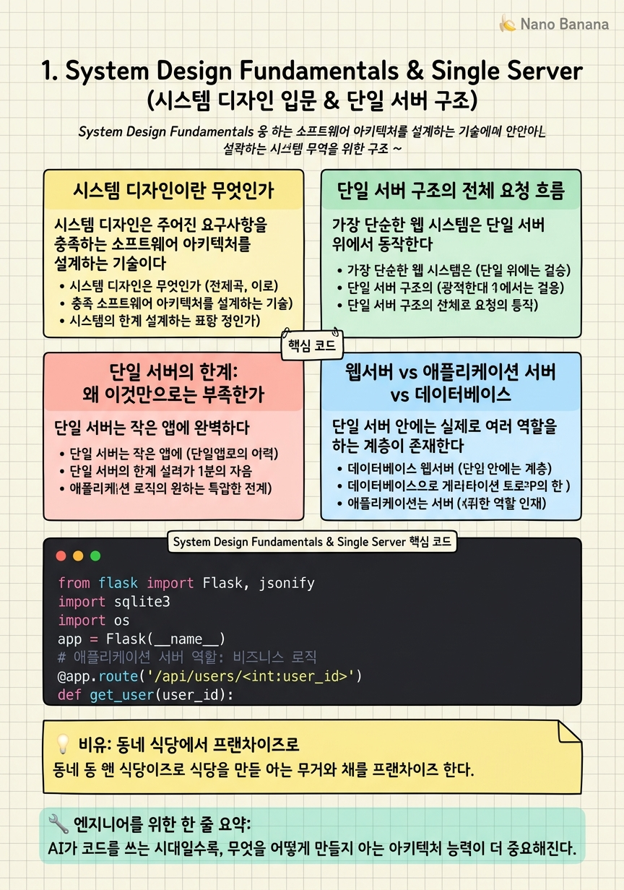

System Design Fundamentals & Single Server

🎯 학습 목표
- 시스템 디자인의 정의와 중요성을 설명할 수 있다
- 단일 서버 아키텍처의 전체 요청 흐름을 그릴 수 있다
- 클라이언트-서버 모델에서 DNS의 역할을 이해한다
- 단일 서버 구조의 확장 한계와 문제점을 식별할 수 있다
- 빅테크 면접에서 시스템 디자인이 평가되는 이유를 안다
AI가 코드를 작성하는 시대가 왔다. GitHub Copilot, Claude, ChatGPT는 구현 코드를 순식간에 생성한다. 하지만 바로 그렇기 때문에 시스템 디자인 능력이 더 중요해졌다 — 무엇을 만들어야 하는지, 어떤 구조로 만들어야 하는지를 아는 엔지니어가 AI를 지휘하는 자리에 서게 된다. 구현 능력이 상향 평준화될수록, 아키텍처를 설계하는 능력은 차별화된 경쟁력이 된다.
시스템 디자인(System Design) = 확장 가능하고, 신뢰할 수 있으며, 유지보수하기 쉬운 소프트웨어 시스템을 계획하고 구조화하는 과정. 단순한 코딩 문제가 아니라, 트레이드오프를 인식하고 요구사항에 맞는 최선의 선택을 내리는 능력이다.
이 챕터에서는 가장 단순한 시스템 — 단일 서버(Single Server) 구조 — 에서 출발한다. 모든 복잡한 분산 시스템은 이 기초 위에 쌓인다. 단일 서버가 어떻게 동작하는지 정확히 이해해야, 왜 나중에 데이터베이스를 분리하고, 로드밸런서를 추가하고, 캐시를 도입하는지를 직관적으로 이해할 수 있다.
핵심 내용
시스템 디자인이란 무엇인가
시스템 디자인은 주어진 요구사항을 충족하는 소프트웨어 아키텍처를 설계하는 기술이다. '이 앱이 1억 명의 사용자를 처리할 수 있는가?', '서버 하나가 다운되면 전체 서비스가 멈추는가?', '데이터베이스가 느려질 때 어떻게 대응할 것인가?' — 이런 질문들이 시스템 디자인의 영역이다.
빅테크(Google, Amazon, Meta)의 시니어 엔지니어 면접에서는 반드시 시스템 디자인 라운드가 포함된다. 이유는 명확하다 — 시니어 엔지니어의 핵심 업무가 바로 이것이기 때문이다. 기능 하나를 구현하는 것이 아니라, 수백만 명이 사용할 수 있는 확장 가능한 시스템을 만드는 것.
확장성(Scalability) = 사용자가 10배 늘어도 시스템이 버틸 수 있는 능력.
신뢰성(Reliability) = 일부 구성 요소가 실패해도 전체 시스템이 동작하는 능력.
유지보수성(Maintainability) = 시스템을 이해하고, 수정하고, 운영하기 쉬운 정도.
단일 서버 구조의 전체 요청 흐름
가장 단순한 웹 시스템은 단일 서버 위에서 동작한다. 사용자가 www.example.com에 접속하면 정확히 무슨 일이 일어나는지 추적해 보자.
1단계: DNS 조회. 사용자의 브라우저는 www.example.com이라는 도메인 이름을 IP 주소로 변환해야 한다. DNS(Domain Name System) 서버에 쿼리를 보내면 198.51.100.42 같은 IP 주소를 돌려받는다. DNS는 인터넷의 전화번호부다.
2단계: HTTP 요청. 브라우저는 해당 IP 주소로 HTTP 요청(GET /index.html)을 보낸다.
3단계: 서버 처리. 서버는 요청을 받아 처리한다 — 웹서버(Nginx)가 정적 파일을 반환하거나, 애플리케이션 서버(Flask, Django)가 비즈니스 로직을 실행한 뒤 데이터베이스에서 데이터를 가져온다.
4단계: HTTP 응답. 서버는 HTML, JSON 등을 담아 응답을 돌려보낸다. 브라우저는 이를 렌더링한다.
이 모든 일이 단일 서버에서 일어난다. 웹서버, 애플리케이션 서버, 데이터베이스가 모두 한 머신 위에 있다.
단일 서버의 한계: 왜 이것만으로는 부족한가
단일 서버는 작은 앱에 완벽하다. 빠르게 시작할 수 있고, 운영이 단순하다. 하지만 트래픽이 늘어나면 문제가 생긴다.
메모리 부족. 동시 사용자가 1,000명을 넘으면 RAM이 부족해진다. 각 요청이 메모리를 사용하고, 단일 서버의 RAM에는 한계가 있다.
CPU 병목. 이미지 처리, 복잡한 쿼리, 암호화 — 이런 작업들이 CPU를 점유하면 다른 요청들이 대기 줄에서 기다려야 한다.
단일 장애점(SPOF). 단일 서버 구조의 가장 치명적인 문제다. 서버 하나가 멈추면 전체 서비스가 멈춘다. 데이터센터 정전, OS 패치 재시작, 메모리 누수 — 어떤 이유로든 서버가 멈추면 모든 사용자가 영향받는다.
디스크 I/O 경쟁. 웹 요청 처리, 데이터베이스 쿼리, 로그 기록이 동시에 같은 디스크에서 경쟁한다. 이는 전체 응답 속도를 저하시킨다.
이러한 한계들이 바로 이후 챕터에서 다룰 데이터베이스 분리, 수평 스케일링, 로드밸런싱, 캐싱의 이유다.
웹서버 vs 애플리케이션 서버 vs 데이터베이스
단일 서버 안에는 실제로 여러 역할을 하는 계층이 존재한다. 이를 명확히 구분하면 나중에 각 계층을 분리하는 아키텍처를 이해하기 쉽다.
웹서버(Web Server) = 정적 파일(HTML, CSS, JS, 이미지)을 클라이언트에게 제공하고, 동적 요청을 애플리케이션 서버로 전달하는 계층. Nginx, Apache가 대표적이다. 매우 빠르고 많은 동시 연결을 처리할 수 있도록 최적화되어 있다.
애플리케이션 서버(Application Server) = 비즈니스 로직을 실행하는 계층. '주문을 처리한다', '사용자를 인증한다', '추천 알고리즘을 실행한다' 같은 동적 작업을 담당한다. Flask, Django, Express, Spring Boot가 여기에 해당한다.
데이터베이스(Database) = 데이터를 영속적으로 저장하고 조회하는 계층. 애플리케이션 서버가 데이터베이스에 쿼리를 보내 필요한 데이터를 가져온다.
단일 서버에서는 이 세 계층이 하나의 머신에 동거한다. 확장이 필요해지면 이들을 분리하는 것이 첫 번째 단계다.
💡 비유로 이해하기
단일 서버는 혼자 모든 일을 하는 동네 식당과 같다. 주방장 한 명이 주문을 받고, 요리하고, 서빙하고, 계산까지 한다. 손님이 5명이면 완벽하게 돌아간다. 하지만 갑자기 손님이 50명이 몰려오면 어떻게 될까?
주방장이 지쳐 쓰러지거나(서버 과부하), 주문이 밀리거나(응답 지연), 심하면 가게 문을 닫아야 한다(서비스 다운). 이것이 단일 서버의 한계다.
해결책은 단계적 분리다. 먼저 홀 직원(웹서버)과 주방(애플리케이션 서버)을 분리한다. 그리고 메뉴 관리 시스템(데이터베이스)을 별도로 둔다. 나중에 손님이 더 많아지면 지점을 여러 개 낸다(수평 스케일링). 각 지점으로 손님을 적절히 배분하는 예약 시스템이 로드밸런서다. 이 모든 과정이 시스템 디자인이다.
💻 코드 예시
Flask로 단일 서버의 전형적인 구조를 구현해 보자. 웹서버 역할(정적 파일 서빙), 애플리케이션 서버 역할(비즈니스 로직), 데이터베이스 연결이 하나의 프로세스에서 동작하는 방식이다.
from flask import Flask, jsonify
import sqlite3
import os
app = Flask(__name__)
# 애플리케이션 서버 역할: 비즈니스 로직
@app.route('/api/users/<int:user_id>')
def get_user(user_id):
# 데이터베이스 연결 (같은 서버 위의 SQLite)
conn = sqlite3.connect('local.db')
cursor = conn.cursor()
cursor.execute('SELECT id, name, email FROM users WHERE id = ?', (user_id,))
user = cursor.fetchone()
conn.close()
if not user:
# 404: 리소스 없음
return jsonify({'error': 'User not found'}), 404
# 200: 정상 응답
return jsonify({'id': user[0], 'name': user[1], 'email': user[2]})
@app.route('/health')
def health_check():
# 로드밸런서가 이 엔드포인트를 호출해 서버 상태 확인
return jsonify({'status': 'healthy'}), 200
if __name__ == '__main__':
# 단일 서버: 모든 것이 한 프로세스에서 실행
app.run(host='0.0.0.0', port=8080)get_user 함수가 애플리케이션 서버의 역할을 한다 — HTTP 요청을 받아 비즈니스 로직을 처리하고 데이터베이스에 쿼리한다. /health 엔드포인트는 나중에 로드밸런서가 이 서버가 살아있는지 확인할 때 사용한다. 지금은 모든 것이 하나의 app.run()에서 실행되지만, 이후 챕터에서 이 구조를 레이어별로 분리하게 된다.
🏭 현업에서의 평가
✅ 시니어가 보는 것
- 요구사항 명확화를 먼저 하는가 (DAU, QPS, 데이터 크기, 레이턴시 요구사항)
- 단순한 구조에서 시작해 점진적으로 복잡성을 추가하는가
- 각 설계 결정의 트레이드오프를 명시적으로 언급하는가
- 실제 프로덕션 도구(Nginx, Redis, PostgreSQL)를 언급하는가
- 병목 지점을 스스로 찾고 해결책을 제안하는가
⚠️ 레드 플래그
- 요구사항 확인 없이 바로 설계를 시작함
- 단순한 것에서 복잡한 것으로 가는 흐름 없이 처음부터 과도하게 복잡한 설계
- 트레이드오프 언급 없이 특정 기술을 '최선'이라고 단정
- 단일 장애점(SPOF)을 인식하지 못하는 것
🎤 예상 인터뷰 질문
- URL 단축 서비스(bit.ly)를 설계해 보세요. 초당 1,000건의 쓰기, 10만 건의 읽기를 처리해야 합니다.
- 인스타그램 뉴스피드를 설계해 보세요. 1억 명의 MAU를 가정합니다.
- 이 설계에서 가장 먼저 병목이 될 것은 어디인가요? 어떻게 해결하시겠습니까?
✨ 핵심 요약
AI 시대의 역설
AI가 코드를 쓰는 시대일수록, 무엇을 어떻게 만들지 아는 아키텍처 능력이 더 중요해진다.
단일 서버 흐름
DNS 조회 → IP 획득 → HTTP 요청 → 서버 처리(웹서버→앱서버→DB) → HTTP 응답
3계층 분리
웹서버(정적 파일), 애플리케이션 서버(비즈니스 로직), 데이터베이스(데이터 영속성)은 역할이 다르다.
단일 서버의 치명적 한계
SPOF — 서버 하나가 멈추면 전체 서비스가 멈춘다. 이것이 모든 스케일링의 출발점이다.
/health 엔드포인트
로드밸런서가 서버 상태를 확인하기 위해 호출하는 헬스체크 엔드포인트는 모든 서버에 필수다.
점진적 복잡성
시스템 디자인은 항상 단순한 것에서 시작해 필요에 따라 복잡성을 추가하는 방식으로 접근한다.
요구사항이 먼저
면접에서는 설계 전에 DAU, QPS, 데이터 크기, 레이턴시 요구사항을 반드시 확인한다.